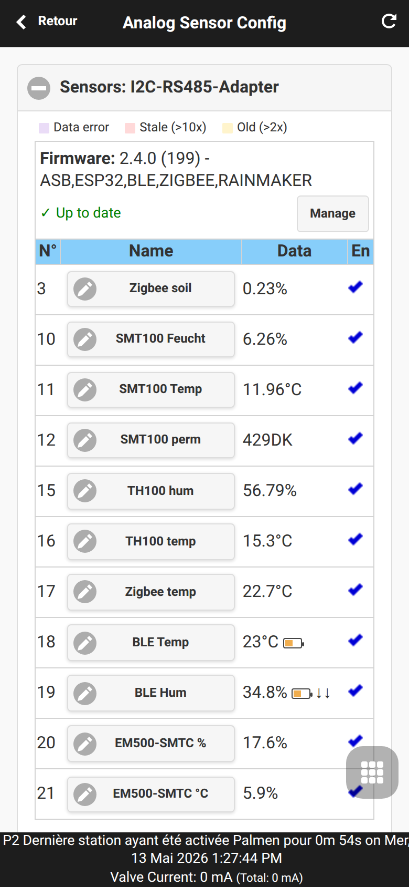
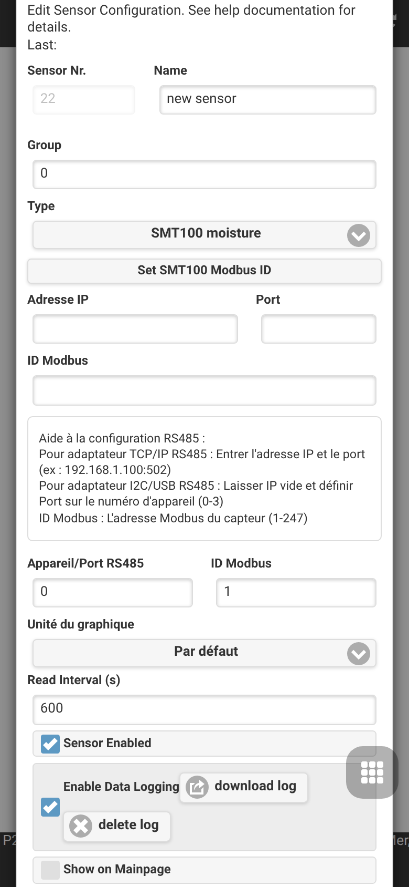
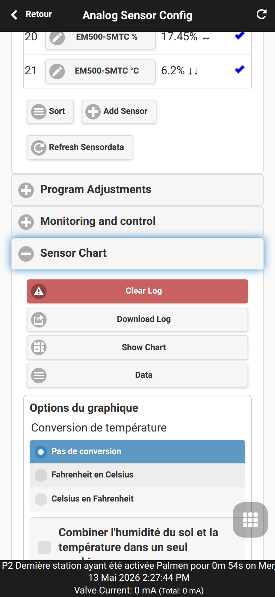
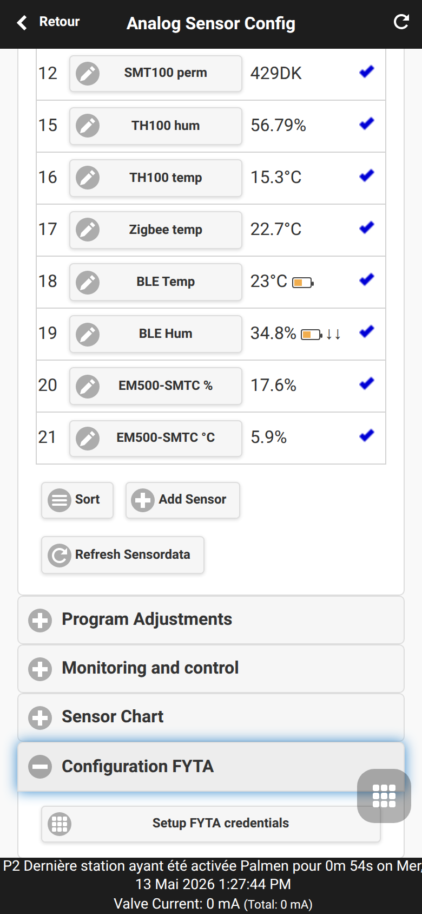
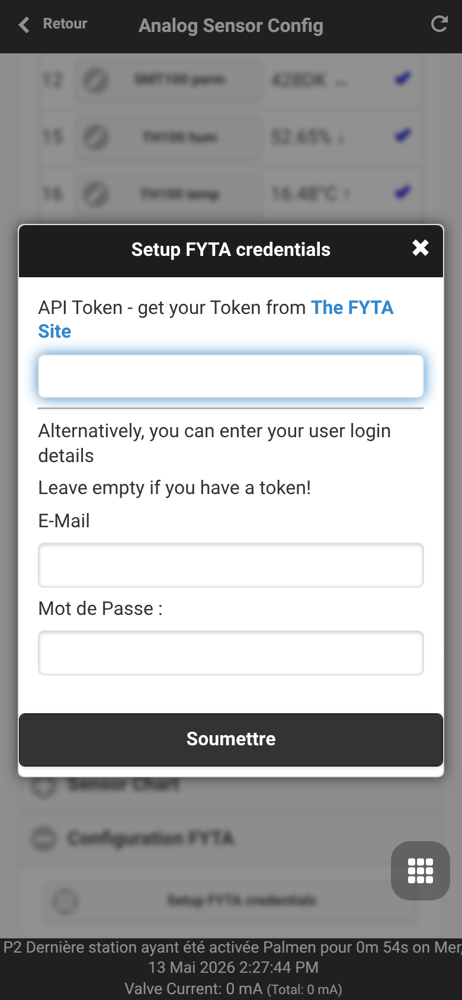
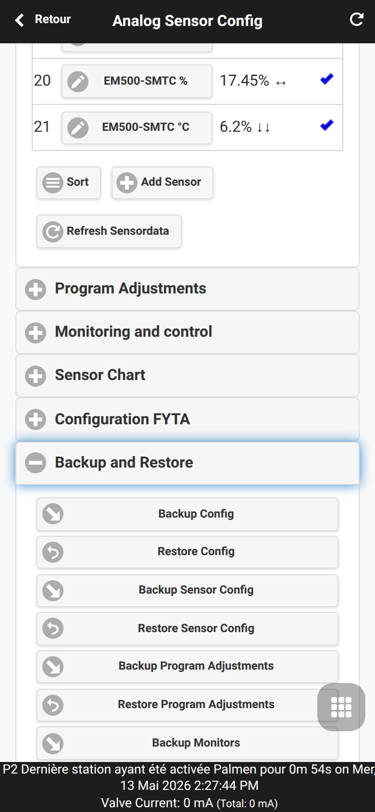

Configuration des capteurs analogiques
Analog Sensor Configuration est la zone UI OpenSprinklerPro pour définir les sources de capteurs et utiliser leurs valeurs dans l’automatisation de l’arrosage. Elle s’ouvre depuis le menu inférieur avec Analog Sensor Configuration.

Pages liées : Automatisation capteurs et monitors, Capteurs FYTA, Extension OpenSprinklerPro, addendum API et plateformes.
Définitions de capteurs
La première section définit la liste des capteurs. Chaque ligne contient numéro, nom, valeur actuelle et état actif. Add Sensor ouvre l’éditeur d’un nouveau capteur; les capteurs existants se modifient en touchant leur nom.

Familles de capteurs prises en charge selon plateforme et firmware :
| Famille | Usage typique |
|---|---|
| Carte analogique | Valeurs tension ou pourcentage de capteurs analogiques |
| Truebner / RS485 / Modbus | SMT50/SMT100/TH100 et valeurs Modbus RTU génériques |
| Zigbee | Capteurs ESP32-C5 Zigbee, par exemple température, humidité ou sol |
| BLE | Capteurs Bluetooth Low Energy sur builds ESP32 avec BLE |
| MQTT | Valeurs publiées par des systèmes externes |
| FYTA | Humidité et température du sol depuis le cloud FYTA |
| OpenSprinkler distant | Valeur de capteur lue sur un autre contrôleur |
| Météo | Température, humidité, pluie, vent, ETo ou rayonnement |
| Groupes | Minimum, maximum, moyenne ou somme d’autres capteurs |
| Diagnostic | Mémoire libre, stockage libre ou diagnostics contrôleur |
Ajustements de programme
Les Program Adjustments adaptent la durée d’arrosage d’un programme à partir d’une valeur capteur.


Types : LINEAR, DIGITAL_MIN, DIGITAL_MAX, DIGITAL_MINMAX. Voir Automatisation capteurs et monitors et addendum API.
Monitors et alertes locales
Monitoring and Control crée des règles de seuil et de logique à partir des capteurs. Les monitors peuvent générer des avertissements locaux et alimenter les notifications.


Graphiques et données capteur
Sensor Chart affiche les valeurs journalisées, télécharge les logs ou ouvre la table de données.

Configuration FYTA
FYTA Setup stocke le jeton API ou les identifiants FYTA et mappe les capteurs de plantes vers OpenSprinkler. Voir Capteurs FYTA.


Sauvegarde et restauration
Backup and Restore exporte ou restaure configuration capteurs, ajustements de programme et monitors séparément de la sauvegarde générale.
